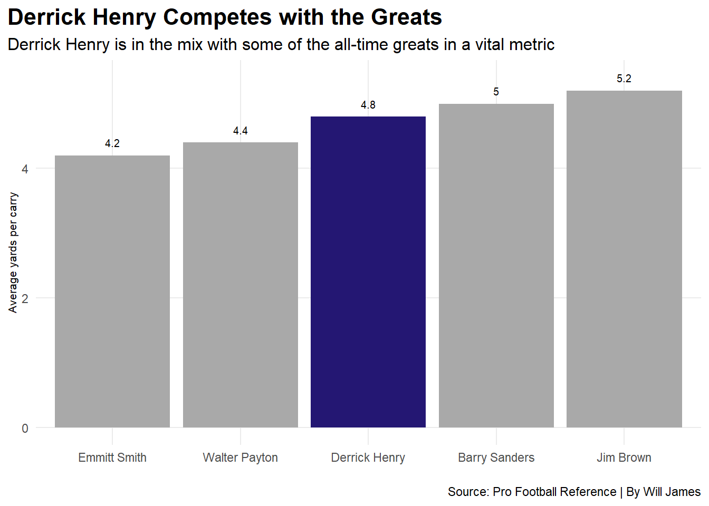

Derrick Henry has been nothing short of spectacular during his career in the NFL. Ruling over the league for many years as the best and most feared running back to play against. His so-called rule is what earned him the title “King Henry.” But does this success compare to that of the all-time great running backs of the NFL’s history?
Pro Football Reference has some very interesting statistics that have helped me to come to a conclusion on the matter.
Starting by looking at a metric that says a lot about a running back, more specifically, their efficiency. The best way to measure a running back’s efficiency through statistics would be through their yards per rushing attempt.
Let’s see how Henry’s efficiency compares to some of the all-time greats.
Code
library(tidyverse)ssrushyds <-read_csv("ssrushyds.csv")rushingtd <-read_csv("rushingtd.csv")crushypc <-read_csv("crushypc.csv")Henryypc <- crushypc |>filter( Player =="Derrick Henry") |>select(Player, Y.A) ypcgreats <- crushypc |>filter( Player =="Jim Brown"| Player =="Barry Sanders"| Player =="Derrick Henry"| Player =="Walter Payton"| Player =="Emmitt Smith") |>select(Player, Y.A)ggplot() +geom_bar(data=ypcgreats, aes(x=reorder(Player, Y.A), weight = Y.A), fill="darkgrey") +geom_bar(data=Henryypc, aes(x=reorder(Player, Y.A), weight=Y.A), fill="#241773") +labs(title ="Derrick Henry Competes with the Greats", subtitle="Derrick Henry is in the mix with some of the all-time greats in a vital metric", x="", y="Average yards per carry", caption="Source: Pro Football Reference | By Will James") +geom_text(aes(x=1, y=4.4, label="4.2"), color="black", size =2.7) +geom_text(aes(x=2, y=4.6, label="4.4"), color="black", size =2.7) +geom_text(aes(x=5, y=5.4, label="5.2"), color="black", size =2.7) +geom_text(aes(x=4, y=5.2, label="5"), color="black", size =2.7) +geom_text(aes(x=3, y=5, label="4.8"), color="black", size =2.7) +theme_minimal() +theme(plot.title =element_text(size =16, face ="bold"),axis.title =element_text(size =8), plot.subtitle =element_text(size=12), panel.grid.minor =element_blank(),plot.title.position ="plot" )

One statistic that most people look at when talking about how great a player is, is the point maker, touchdowns. But we aren’t just looking at any touchdowns, we are looking at career rushing touchdowns.
If scoring points is what makes you great, then having the most career rushing touchdowns would make you the best, right?
Well if that were the case, then the best running back of all time would be longtime Cowboys running back Emmitt Smith would top that list as the lone holder of most career rushing touchdowns.
So where does Derrick Henry fit into this? Well, Emmitt Smitt has held that record for quite some time as he is enjoying retirement, but Henry has boasted some very good numbers over his career, is his pace enough though?
Code
crtd <- rushingtd |>select(Player, TD, Years)crtde <- rushingtd |>filter( Player =="Emmitt Smith"| Player =="0")crtdg <- rushingtd |>filter( Player =="Emmitt Smith"| Player =="LaDainian Tomlinson"| Player =="Walter Payton"| Player =="Jim Brown"| Player =="Adrian Peterson"| Player =="Barry Sanders") |>select(Player, TD, Years)Henrytd <- rushingtd |>filter( Player =="Derrick Henry") |>select(Player, TD, Years)ggplot() +geom_point(data = crtd, aes(x = Years, y = TD), color ="lightgrey", size =2) +geom_point(data = crtdg, aes(x = Years, y = TD), color ="#999999", size =2) +geom_point(data = Henrytd, aes(x = Years, y = TD), color ="#9E7C0C", size =3) +geom_smooth(data = crtde, aes(x = Years, y = TD), method ="lm", color ="black", linewidth = .75) +geom_text(aes(x=15.8, y=159, label="Emmitt Smith"), color="black", size =3) +geom_text(aes(x=11, y=150, label="LaDainian Tomlinson"), color="black", size =3) +geom_text(aes(x=14.17, y=110.5, label="Walter Payton"), color="black", size =3) +geom_text(aes(x=9, y=110.7, label="Jim Brown"), color="black", size =3) +geom_text(aes(x=14.5, y=125, label="Adrian Peterson"), color="black", size =3) +geom_text(aes(x=11.1, y=96, label="Barry Sanders"), color="black", size =3) +geom_text(aes(x=7.9, y=102, label="Derrick Henry"), color="black", size =3) +scale_x_continuous(breaks=c(0, 3, 6, 9, 12, 15), limits=c(4.5,16.5)) +scale_y_continuous(limits=c(45,170)) +theme_minimal() +labs(y ="Career Touchdowns", x ="Years in the League", title ="Derrick Henry Trails Few for Touchdown Leader",subtitle ="Henry is up there amongst the greatest of the greats for career rushing touchdowns all-time, with some time to make it to the top",caption="Source: Pro Football Reference | By Will James") +theme(plot.title =element_text(size =16, face ="bold"),plot.subtitle =element_text(size =10),axis.title =element_text(size =8),panel.grid.minor =element_blank(),plot.title.position ="plot" )
Warning in qt((1 - level)/2, df): NaNs produced
Warning in max(ids, na.rm = TRUE): no non-missing arguments to max; returning
-Inf
What this tells us is that while Derrick Henry has quite a ways to go, assuming he stays on his current trajectory and plays around as long as Emmitt Smith played, Henry could surpass Smith for that record. Easier said than done though.
One final metric to compare Henry against the greats is by his single season yardage this season, as he is on a strong pace to potentially make a case for this record as well, and surely a running back that could break two phenomenal records is worthy of “The Kings” crown.
Unfortunately for Henry, he has fallen behind the ball a little bit compared to how he was playing earlier in the season, and that will make his odds of breaking that record quite a bit more difficult.
One last thing to note before looking at this graphic, there are only the top four players all time with Derrick Henry from this year, but the fifth man on that list, was Derrick Henry himself from a few years ago, keep that in mind.
Code
great_colors <-c("#4F2683", "#B0B7BC", "#9E7C0C", "#ffa300", "#000000")ssryg <- ssrushyds |>filter( Player =="Eric Dickerson (1984)"| Player =="Adrian Peterson (2012)"| Player =="Jamal Lewis (2003)"| Player =="Barry Sanders (1997)"| Player =="Derrick Henry (2024)") |>select(Player, Yds, G)ggplot(ssryg, aes(x = G, y = Yds, color = Player, group = Player)) +geom_point(size =1) +geom_line(linewidth = .6) +theme_minimal() +theme(panel.grid.major.x =element_blank()) +scale_color_manual(values = great_colors) +labs(title ="Henry on the Cusp of Greatness", subtitle="Derrick Henry is only a step behind in making history", x="Games Played", y="Season Rushing Yards", caption="Source: Pro Football Reference | By Will James") +theme_minimal() +theme(plot.title =element_text(size =16, face ="bold"),axis.title =element_text(size =10), plot.subtitle =element_text(size=10), panel.grid.minor =element_blank(),plot.title.position ="plot" ) +scale_x_continuous(breaks=c(8, 10, 12, 14, 16), limits=c(8,16.5)) +scale_y_continuous(limits=c(825,2150))
So, what is the conclusion that these graphs indicate? I think these show that Derrick Henry is not quite amongst those top tier historical players, but if he continues his play over several years, Henry might have a much stronger case come the end of his career.